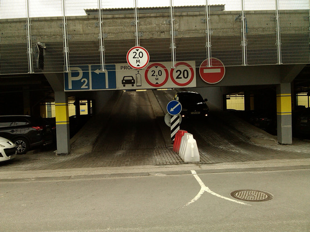
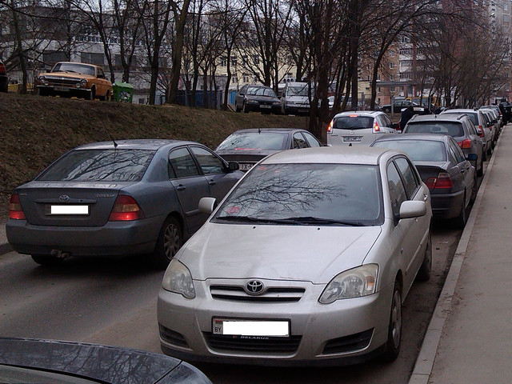

На дорогах Республики Беларусь установлено правостороннее движение транспортных средств.
Бывают и исключительные ситуации, когда водителям приходится передвигаться по правилам левостороннего движения.
Например заезд на паркинг торговово центра "Скала" (Минск) осуществляется по правилам левостороннего движения.
g 
Левостороннее движение при заезде на паркинг ТЦ Скала. Фото автора.
Иногда с левосторонним движением можно столкнуться и на узких улицах.
Например автомобили припаркованы на встречной стороне проезжей части и их объезд также осуществляется по
встречке.
В таком случае, чтобы не блокировать разъезд, водитель, находящейся в своей полосе, может также принять налево,
во встречную полосу движения.

Левостороннее движение на узкой улице (ул. Артиллеристов). Фото автора.